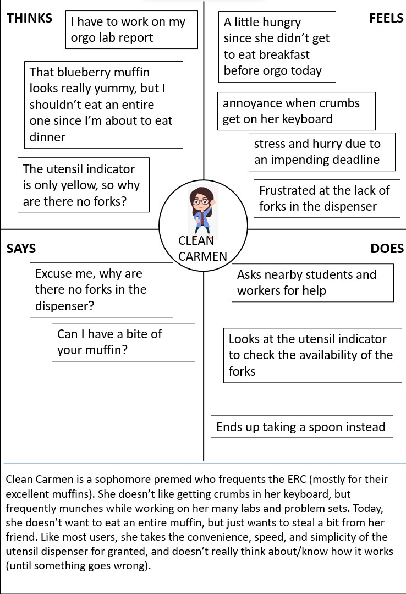
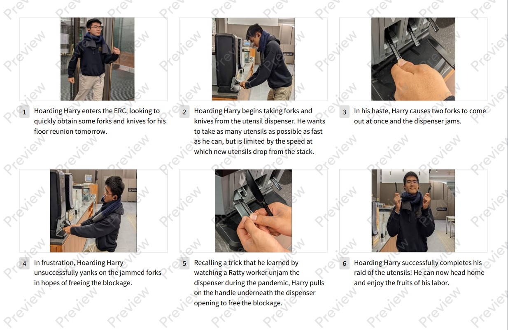

CS1300 Project 1: Personas and Storyboarding
This project ...
My Interface: Utensil dispenser
The interface I chose to examine was a utensil dispenser located at the ERC.

User Observations
After observing users interact with the utensil dispenser, I noticed these overarching themes:
- In terms of which utensils are taken, forks are the most popular by a large margin, followed by knives and then spoons.
- In terms of quantity of utensils, most users took only one item of a given type, and one at a time. Some users did take multiple utensils, but usually of different types (i.e. a fork and a knife rather than two forks).
- In terms of the timing of interactions, most interactions with the interface did not last more than a second (simply pulling out the desired utensil and leaving.) Interactions that lasted longer than that were usually due to taking multiple utensils, since there is a delay when taking more than one utensil. This delay is especially notable when taking multiple of the same utensil, since the next utensil has to fall down before it can be taken. Thus, the area around the interface remained relatively clear even though there was high traffic flow.
- In terms of how users interacted with the interface, most people used one hand to operate it, since many were holding other things in their other hand (i.e. ERC muffins and other pastries). The notable exception was when people would take multiple utensils, occasionally both hands would be used.
User Interview Questions
I used the following questions to interview my users:
- Have you used this dispenser in the past?
- Describe the purpose of this dispenser.
- Describe how you use this dispenser.
- What did you need utensils for today? What about typically?
- on a scale of 1-5, with 1 being not at all intuitive and 5 being extremely intuitive, how intuitive would you rate this dispenser as being? Could you elaborate on [your answer]?
- [if used before:] Can you think of a time when you struggled to use the dispenser? What didn't go as expected?
User Interview Insights
For each of the questions, here are the general conclusions I was able to draw:
- All interviewees had used the dispenser before.
- All interviewees essentially talked about the purpose being to easily dispense plastic utensils.
- All interviewees described the process of using the interface as a simple pulling or yanking of the handle hanging out of the dispenser.
-
Some interesting responses were:
- one user reported that they needed a knife to cut a mango
- users reported that they typically used utensils to accompany the food that they bought at the erc café, particularly muffins
- one user noted not wanting to get their fingers dirty when working and eating pastries at the same time
- another user noted not always wanting certain parts of the sandwiches they bought
- one user was collecting utensils to bring back and use at home - they regularly resupplied a stock of disposable utensils to use in their dorm.
-
The three scores given were 5, 4, and 5. Generally, there was agreement that the interface was pretty intuitive.
- one user touched upon the idea of affordances (not explicitly) - mentioned that having the utensil handles hanging out like that lends itself to pulling on them
- another user said they preferred the style of dispenser where you press a lever or button, since it feels more interactive/natural to them. They mentioned straw dispensers as an example of such an interface.
- A user rated 4 instead of 5 because they said they couldn't conceptualize how the dispenser works, since it's not possible to see how the dispenser works. In other words, they couldn't form a good mental model of how the interface was designed.
-
Most users said no to this question initially, but came up with incidents upon further prompting, indicating that although
such incidents are not frequent, they do happen.
- Some users mentioned times when they wanted to acquire multiple/many utensils for a group activity/for friends and that they struggled to rapidly obtain multiple utensils of the same type
- one user mentioned having the interface jam because multiple utensils entered the slot at the same time. This made it significantly harder to use the interface because they had to pull really hard to get both utensils out at once
- another user mentioned that sometimes they miss the handle or don't pull hard enough, especially if they are in a hurry or are holding other things (i.e. takeout container)
- Lastly, one user mentioned using a similar device when there was high traffic and sometimes finding that there were not utensils of a given variety. They also mentioned learning that they could pull the little handle under each dispenser opening to force a new utensil to drop.
Personas
I created the following personas based on the observations and interviews:


Storyboard
Finally, I created the following storyboard based off of Hoarding Harry's experience using the interface.
